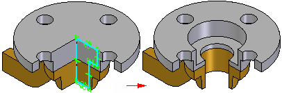

Revolved Cutout command (Assembly environment)
Revolved Cutout command (Assembly environment)
Constructs a revolved cutout in an assembly. You can specify the parts in the assembly from which you want to remove material.

You can use the Feature Options dialog box to specify whether the revolved cutout is an assembly feature, an assembly-driven part feature, or a part feature. Assembly-driven part features are also reflected in the part documents. If you modify the feature in the assembly, the part documents also update. Part features are the same as features created using in-place activation and reside in the part document. Write access in the part document is required to create assembly-driven part features and part features.
For more information on assembly features and assembly-driven part features, see the Assembly-based Features Help topic.
The Feature Options dialog box is not available until you set the Assembly-Driven Part Features option on the Inter-Part tab of the Options dialog box.
How do I
Mirror an assembly featureConstruct a hole in an assembly
Construct a cutout feature in an assembly
Construct a revolved cutout in an assembly
Construct a round in an assembly
Select the parent elements of an assembly feature
Customize a gusset
Learn more
Assembly-based featuresLook up more details
Select Feature Components commandCutout command (Assembly environment)
Round command (Assembly environment)
Hole command (Assembly environment)
Mirror Assembly Feature command
Revolved Cutout command bar (Assembly environment)
Round command bar (Assembly environment)
Cutout command bar (Assembly environment)
Hole command bar (Assembly environment)
Mirror Assembly Feature command bar
Feature Options Dialog Box
Gusset Plate command
Gusset Plate command bar